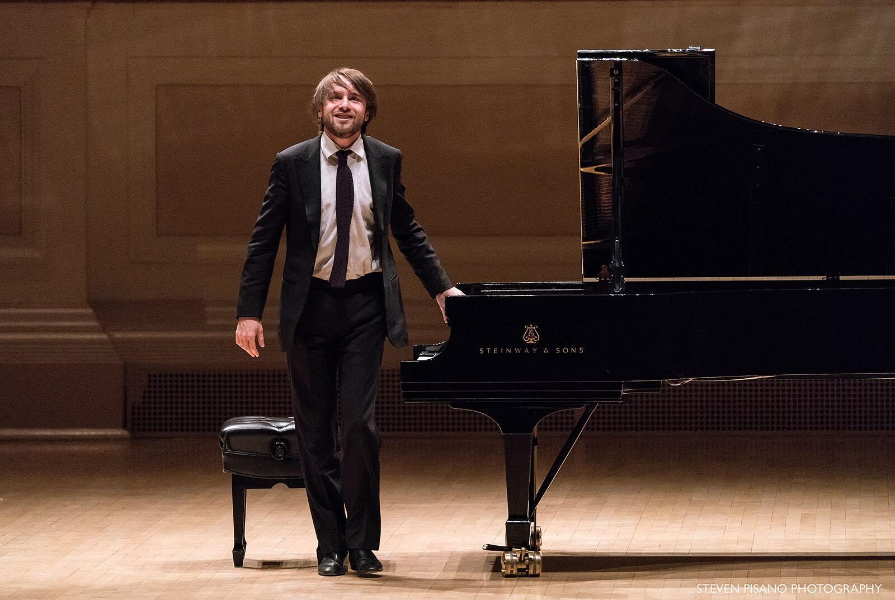

Those Who Keep Tradition Alive
Classical music is not just a part of human history, is a living art that is passed through generations. Many contemporary pianist and composers keep these traditions alive and inspire the next generation worldwide to keep going.
- Lang Lang, is a Chinese pianist who brings this wonderful energy and showmanship to the piano. You could find videos of him throughout YouTube and Red Note, and almost every time you would see the public happy to listen to his wonderful music
- Yuja Wang, is another Chinese pianist that is celebrated due to her amazing technique and bold expression. She has done multiple interviews where she states why she play Rachmaninoff and modern repertoire her own way.
- Víkingur Ólafsson, is an Icelandic pianist that bring brand new interpretations of Bach, and other contemporary works. His interpretations bring clarity and emotional depth, like he not the one playing the music, but the music itself feel alive.
- Daniil Trifonov, is a Russian pianist that anyone would strive to be. He is most known for is romantic and modern repertoire interpretation, where it feels like he speaking throughout these pieces. 